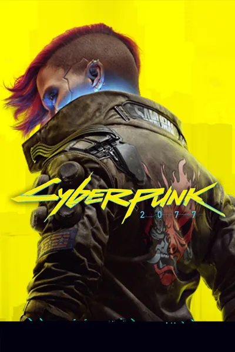

Cyberpunk 2077
Оптимальная калибровка дисплея и производительности на PS5
📺 Дисплей и HDR
SDR Рекомендован
Режим HDR
Выкл (SDR)
Почему выключаем: В игре нативно поднят уровень чёрного (Black Floor Elevation) — игра не гасит пиксели в темноте. Тени заливает серо-зелёной дымкой даже на OLED. В SDR картинка выдаёт эталонный глубокий чёрный и правильный контраст.
Гамма (при выключенном HDR)
1.10
Зачем 1.10: При дефолтном значении 1.00 в SDR слегка давятся околочёрные детали (black crush). 1.10 аккуратно раскрывает полутона в тенях, сохраняя глубокий чёрный.
Режим изображения на ТВ
Game Optimizer / Измерение по источнику
Почему: Отключаем динамический контраст и улучшайзеры движения ТВ, чтобы сохранить честную гамму и минимальный input lag.
⚙️ Графика и эффекты
Режим графики
Производительность (60 FPS)
Почему 60 FPS: Режим Ray Tracing снижает частоту до 30 FPS ради локальных теней. В динамичном шутере от первого лица 60 FPS критичны для отзывчивости управления.
Зернистость плёнки (Film Grain)
Выкл
Почему выключаем: Убирает искусственный шум на текстурах и делает 4K-картинку чище.
Хроматическая аберрация
Выкл
Почему выключаем: Убирает цветные ореолы и размытие по краям кадра.
Размытие в движении (Motion Blur)
Выкл
Почему выключаем: Сохраняет чёткость окружения при быстрых поворотах камеры.
Глубина резкости (Depth of Field)
Выкл (по вкусу)
Почему: Без размытия заднего плана архитектура Найт-Сити остаётся резкой на любой дистанции.
Если всё равно хочется играть с включённым HDR ▼
Максимальная яркость
800 / 1000 нит
Выставлять строго под паспортный пик вашего ТВ в режиме HGiG (800 нит для LG OLED C-серии, 1000 нит для QD-OLED / Mini-LED).
Paper White (Яркость интерфейса)
120 – 140 нит
Значения выше 150 нит делают интерфейс чрезмерно слепящим в тёмной комнате.
Tone Mapping Midpoint
0.95 (дефолт 1.50)
Опускает средние тона ближе к референсной гамме, частично компенсируя высветленные тени.
Режим Tone Mapping на ТВ
HGiG (DTM = Выкл)
Отключаем Dynamic Tone Mapping на телевизоре, чтобы ТВ дополнительно не задирал уровень чёрного.